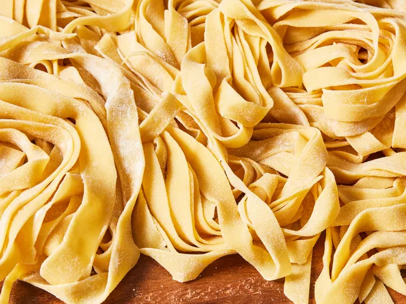

Easy Home Made Pasta

Description
This homemade pasta recipe is consistently great and easy to make with flour, eggs, salt, olive oil, and water. Roll out by hand or use a pasta machine to cut dough into desired pasta shape.
Why buy the boxed stuff when you can make noodles at home? This homemade pasta recipe is way better than what you can buy at the store — and it’s surprisingly easy to throw together with just five ingredients you likely already have on hand.
Home Made Pasta Ingredients
You’ll need just five ingredients to make this easy homemade pasta recipe:
- Flour: This homemade pasta recipe starts with two cups of all-purpose flour.
- Eggs: Eggs lend fat and moisture to the pasta dough.
- Oil: Two tablespoons of olive oil add moisture and help the dough come together.
- Salt: A teaspoon of salt takes the flavor up a notch.
- Water: Add just enough water to form a smooth, thick dough.
Steps To Make Homemade Pasta Dough
Yes. To make homemade pasta dough up to two days in advance:
- Make the dough.
- Turn the dough out and knead.
- Gently coat the dough ball in flour and wrap in plastic storage wrap.
- Refrigerate for up to two days.
- Follow the recipe, starting with Step 4.